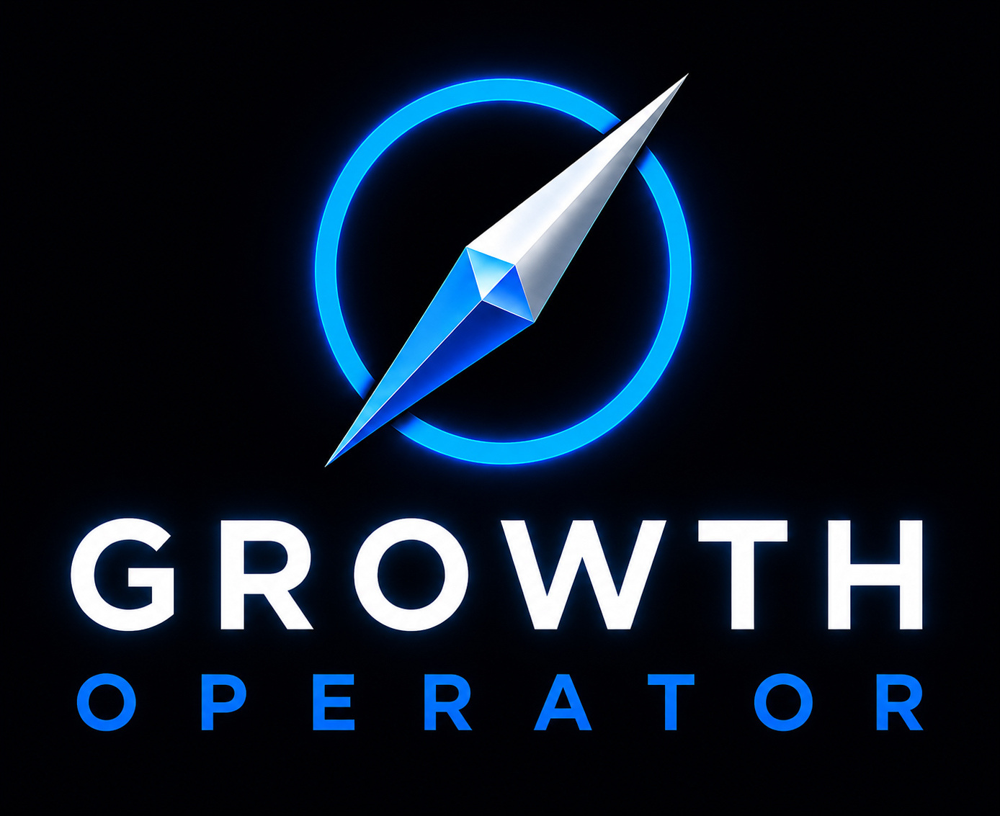

PREVIEW ANALYSIS
GROWTH INTELLIGENCE ENGINE
Building your growth plan.
Connecting your business data to the six Growth Pillars.
LIVE SYSTEM FEED
Initializing Growth Operator
ACTIVE
A
ATLAS OPERATOR LOG
Prioritization engine
● LIVE